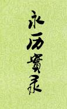

| 历史史籍 > |
| 永历实录 |
| 作者：王夫之 |
|
永历实录，纪传体实录，本纪1卷，列传25卷（第十六卷诸郑列传佚），明末王夫之撰。主要记载从明永历元年明昭宗朱由榔登基到永历十六年明昭宗被吴三桂弑杀之间十六年的史事，对于研究明朝末年的历史有重要的意义。 王夫之（1619-1692），字而农，号畺斋，衡阳人。世称船山先生，与顾炎武、黄宗羲并称明清之际三大思想家。 船山先生虽然名气大，但本书疏忽也不少，比如人名、籍贯、地名就存在明显错误，不是专业人士，难以一一校正。 [2018/5/23，重整理] |
 |
| 一、本纪 |
| 卷1 大行皇帝纪 (2) (3) (4) (5) |
| 二、列传 |
| 卷2 瞿式耜 严起恒 |
| 卷3 丁魁楚 王化澄 朱天麟 |
| 卷4 吴炳 何吾驺 黄士俊 |
| 卷5 李永茂 文安之 方以智 |
| 卷6 陈子壮 姜曰广 |
| 卷7 何腾蛟 堵胤锡 章旷 郑古爱 杨锡亿 |
| 卷8 焦琏 胡一青赵印选王永祚 |
| 卷9 马进忠 卢鼎 王允成 王进才 |
| 卷10 曹志建 杨国栋 张先壁 黄朝宣 |
| 卷11 金声桓 王得仁 李成栋 李元胤 陈友龙 |
| 卷12 王祥 杨展 皮熊 |
| 卷13 高一功李过 |
| 卷14 李定国 |
| 卷15 李来亨 郝永忠 |
| 卷16 诸郑列传(佚) |
| 卷17 晏清 黄奇遇 黄公辅陈世杰蔡之俊 刘远生刘湘客 管嗣裘 朱昌时 |
| 卷18 张家玉 张同敞 朱嗣敏 万年策揭重熙刘季矿 周鼎翰田辟 |
| 卷19 袁彭年 洪天擢 曹晔 |
| 卷20 童天阅 郭之奇 吴贞毓 万翱 程源 鲁可藻 |
| 卷21 金堡 印司奇 丁时魁 张孝起 |
| 卷22 死节列传上 侯伟时 傅作霖 熊兴麟 李兴玮 闻大成 朱学熙 周师文 鄢见 |
| 卷23 死节列传下 萧旷 朱旻如 满大壮 杨进喜 惠延年 何图复 吴学 |
| 卷24 佞幸列传 马吉翔 郭承吴 严云从 侯性 |
| 卷25 宦者列传 李国辅 王坤 庞天寿 夏国祥 |
| 卷26 叛臣列传 刘承胤 陈邦傅 |